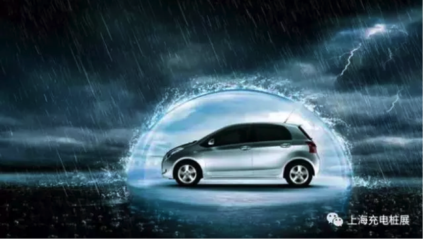
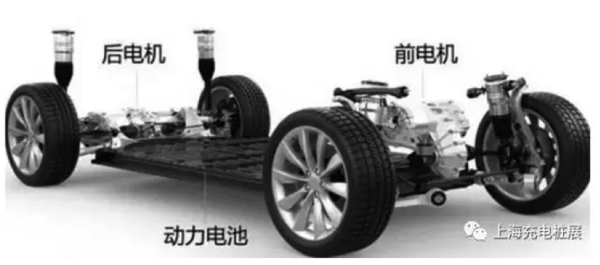
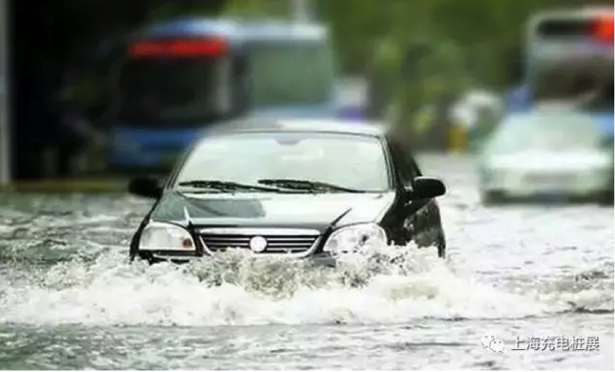

电动汽车相比燃油汽车更善于涉水？
燃油汽车的涉水深度很大程度上取决于其进气口的高度，以及排气情况。
一般来说，汽车进气口位于前机舱盖下，只要水位或者车辆在行驶中造成的水浪高度不高于进气口位置，车辆就可以安全通过。同时，涉水驾驶的时候需要将汽车挂入低档位并辅以大油门增加尾气排放压力，如此才能保证排气管在被水淹掉的情况下，也可以依靠尾气压力正常排气。
一旦车辆在水中熄火，千万不要尝试再次启动，因为排气管此时可能已经进水。冒然启动有可能导致发动机进水，从而引起车辆损坏。而且这种在水中点火对车辆发动机造成的损坏，保险公司是不予赔付的，即使我们购买了涉水险。国家相关标准对机动车的涉水深度要求是20cm。
电动汽车由于不使用内燃机，所以不用担心进气口和排气口进水的问题。其涉水能力要高于燃油汽车，可以在水深40cm的情况下正常行驶。例如比亚迪E6等纯电动汽车甚至能在前机舱、电动机和电池全部被水淹没的情况下坚持行驶。
同时，驾驶电动汽车涉水没有燃油汽车所要求的那么多技巧，驾驶者只要正常驾驶就可以应对。即使驾驶者不小心冲入了积水过深的路段，也可以及时倒车，尽快脱离险情，而不会出现车辆突然熄火失去动力的情况。
安全防护措施排除漏电忧患！
电动汽车的主要部件由电机、电池、电控三大部分组成。
消费者比较担心的情况是电动车的电池、电机等高电压工作部分一旦遭遇水淹，会发生漏电短路，上百伏特的输出电压会对驾乘人员构成危险。
然而，实际的情况与消费者的担心恰恰相反。根据国家标准，对于电动汽车的电池、电机、充电接口等都具有严格的密封标准和防短路措施，在正常情况下，电池、电机即使浸泡在水中十几个小时都不会发生内部进水、漏电的情况。消费者只要购买国家认可的、正规厂家生产的电动汽车，在正常使用情况下其电池和电机都不会发生漏水事故。
电动汽车的涉水极限高度，更多的取决于电控元件的设置。电动汽车的电控箱一般会延伸出多组线缆。众多的线缆在复杂的使用环境下往往难以做到100%的密封和防水。为了提高车辆的涉水性能，厂家往往会把电控箱紧贴在前机舱盖的下方。
同时，对于汽车搭载的其他电子设备来讲，要想做到100%的防水也需要很高成本。
那么电动汽车在迫不得已涉水后，需要注意什么呢？
一、 应尽量避免车辆涉水过深，在遇到积水淹没车辆前机舱的情况下，应在驶出积水路段后，及时前往修理厂进行检测维修，以防止电控箱可能出现的进水，对电子系统造成进一步损害。
二、 在涉水行驶后，应及时对车辆进行通风干燥。并对车身、底盘进行彻底清洗，防止车漆、车身和浸水器件发生腐蚀。
三、 检查前机舱的进水情况。查看电控箱有无浸水迹象，线路是否有腐蚀现象。如果发现有浸水情况，要切掉电源，用电吹风吹干。
四、 检查电动汽车的电机、变速箱在涉水后是否存在异常，尤其要检查刹车系统。因为，电动汽车的刹车液压系统与燃油汽车一样，刹车油一旦进水将可能导致车辆制动失灵。